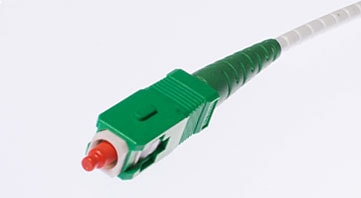
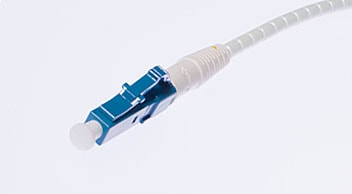
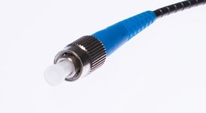
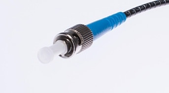
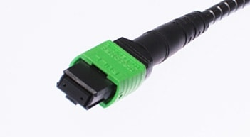

Multi-mode & Single-mode Fiber
standard defined by TIA :
| TIA | VCSEL | Core (µm) |
Max distance @850nm | Max distance @1300nm* | |||||||
| 1Gb/s | 10Gb/s | 40Gb/s | 100Gb/s | 1Gb/s | 10Gb/s | 40Gb/s | 100Gb/s | ||||
| MMF 850- 1300 nm |
OM1 | X | 62.5 | 220m | 32m | – | – | 550m | – | – | – |
| OM2 | X | 50 | 550m | 82m | – | – | 550m | 82m | – | – | |
| OM3 | O | 50 | 550m | 300m | 100m | 100m | 1km | 300m | – | – | |
| OM4 | O | 50 | 550m | 550m | 125m | 125m | 1km | 550m | – | – | |
| Max distance @1310nm | Max distance @1550nm | ||||||||||
| 1Gb/s | 10Gb/s | 40Gb/s | 100Gb/s | 1Gb/s | 10Gb/s | 40Gb/s | 100Gb/s | ||||
| SMF 1310- 1550 nm |
OS1 | O | 9 | 5km | 5km | 10km | 10km | – | 40km | 40km | 40km |
| OS2 | O | 9 | 5km | 5km | 10km | 10km | – | 40km | 40km | 40km | |
Connector
| SC (Square Connector) |
在香港稱為「大頭」或者「方頭」，是比較舊款的接頭，在舊式的網絡設備較為常見。 |  |
| LC (Little Connector) |
在香港稱為「細頭」，是常見的接頭，比 SC 優勝的地方是比較小，這樣網絡設備上的界面也可以造得較小。 |  |
| FC (Fiber Channel) |
又稱為「大圓頭」，好像比較少見，由於是扭鏍絲的設計，會比較穩固。 |  |
| ST (Straight Tip) |
又稱為「細圓頭」，在 Fiber Patch Panel 會比較常用。 |  |
| MTP (Multifiber Termination Push-on) |
一個接頭可以連接 24 條光纖線，適合在需要大量線材的環境下使用。 |  |
Fiber Module

Spectrum

Multi-mode :
短波，230 ~ 353 THz，850 ~ 1300 nm
Single-mode :
長波，194 ~ 229 THz，1310 ~ 1550 nm
Source
LED :
多模光纖一般採用 LED 作為光源，能支援最多 40 Gbps。
ILD :
單模光纖採用 ILD (注入式鐳射二級管) 作為光源。
VCSEL :
(Vertical-Cavity Surface-Emitting Laser)，VCSEL 的閃動頻率比 LED 大，能支援最多 100 Gbps。但要求線材支緩 VCSEL。